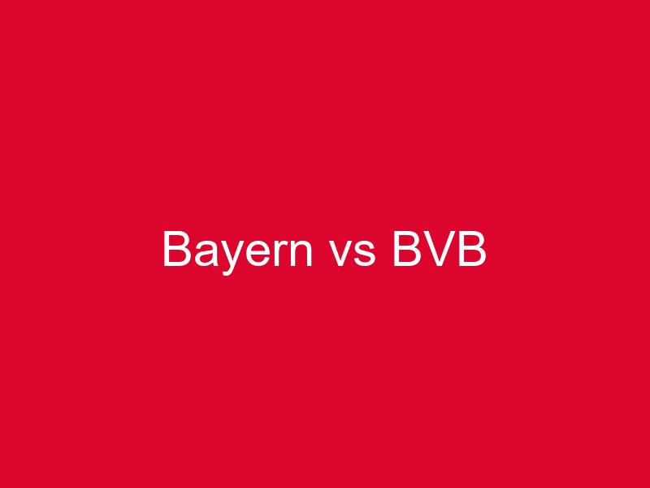

Das Spitzenspiel der Bundesliga steht bevor und die Spannung könnte kaum größer sein. Am Samstag empfängt der FC Bayern München Borussia Dortmund in der Allianz Arena zum traditionsreichen "Klassiker". Beide Mannschaften befinden sich in hervorragender Form und wollen mit einem Sieg ihre Ambitionen auf die Deutsche Meisterschaft untermauern.
Die Ausgangslage
Der FC Bayern München führt aktuell die Tabelle mit 68 Punkten an, dicht gefolgt von Borussia Dortmund mit 65 Punkten. Bei noch sechs ausstehenden Spielen könnte dieses Duell bereits vorentscheidend für den Meistertitel sein. Die Münchner sind seit acht Spielen ungeschlagen, während Dortmund in den letzten zehn Partien nur eine Niederlage hinnehmen musste.
Die taktische Schlacht
Thomas Tuchel wird voraussichtlich auf seine bewährte 4-2-3-1 Formation setzen. Mit Harry Kane in Topform, der bereits 28 Saisontore erzielt hat, verfügen die Bayern über einen Unterschiedsspieler, der in jedem Moment für Tore sorgen kann. Jamal Musiala und Leroy Sané sollen mit ihren Dribblings für Unruhe in der BVB-Defensive sorgen.
Edin Terzić hingegen setzt auf ein variables 4-3-3 System. Die Schnelligkeit von Karim Adeyemi und die Kreativität von Marco Reus sind die Hauptwaffen des BVB. Besonders gefährlich wird Dortmund in Kontersituationen, wo sie ihre Stärken voll ausspielen können.
Die Schlüsselduelle
Besonders spannend wird das Duell zwischen Joshua Kimmich und Jude Bellingham im Mittelfeld. Beide Spieler sind die Taktgeber ihrer Teams und werden versuchen, das Spiel zu kontrollieren. Auch das Aufeinandertreffen von Mats Hummels und Harry Kane verspricht hochklassigen Fußball.
Historische Bedeutung
Der "Klassiker" hat in den letzten Jahren für unvergessliche Momente gesorgt. Von Robert Lewandowskis Viererpack bis zu Mats Hummels' Siegtoren - diese Begegnung hat Geschichte geschrieben. Beide Vereine haben sich 127 Mal in der Bundesliga gegenübergestanden, wobei Bayern mit 68 Siegen die Nase vorn hat.
Prognose
Das Spiel verspricht eine enge und spannende Angelegenheit zu werden. Die Heimstärke der Bayern trifft auf die momentan beste Auswärtsbilanz der Liga von Dortmund. Ein Unentschieden würde beiden Teams nicht wirklich weiterhelfen, daher ist mit offenem Visier zu rechnen. Meine Prognose: 3:2 für den FC Bayern München nach einem packenden Spiel mit vielen Toren.
Wo kann man das Spiel sehen?
Das Topspiel wird am Samstag um 18:30 Uhr angepfiffen und ist live im Free-TV zu sehen. Für alle Fußballfans ein absolutes Pflichtprogramm!
Fazit: Der Klassiker Bayern gegen Dortmund verspricht wieder einmal Hochspannung pur. Beide Teams sind in Bestform und wollen den wichtigen Sieg einfahren. Für die neutralen Zuschauer dürfte es ein Fußball-Fest der Extraklasse werden.